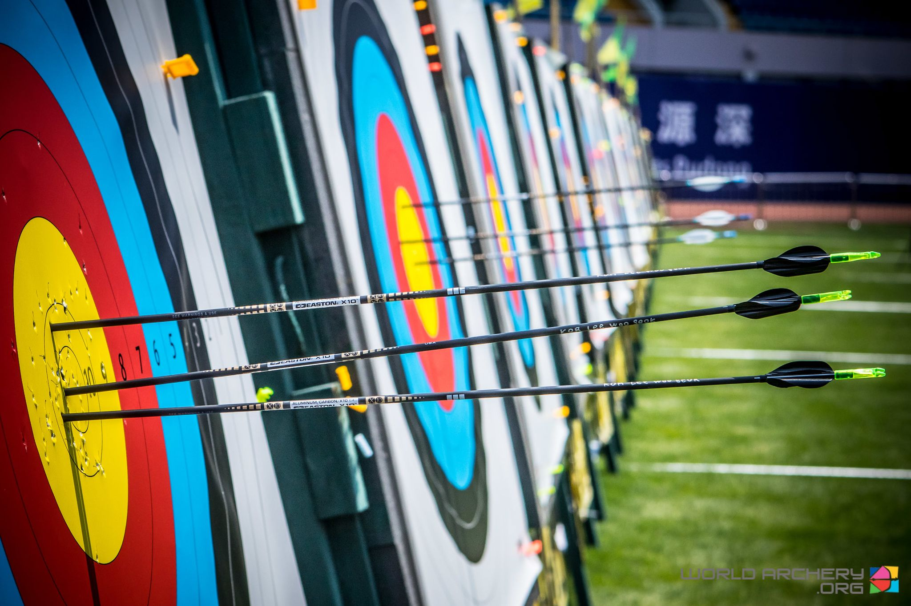

Extra-Curriculum At SISM
ARCHERY!!!!!

Archery
march 3,2026
Archery ECA is a sport that involves shooting arrows at targts using a bow at a target that isnt moving. It is a sport that can be played by anyone and is a fun and interesting way to experience something new. Archery is also a sport that involves the use and training of many muscles involving the shoulder, chest, and triceps. Archery has deep historical roots dating back to the stone age when people used bows to hunt for food and fight their enemies in war. It is even a sport that is played and involved in the Olympics, so by no means is it an outdated sport!